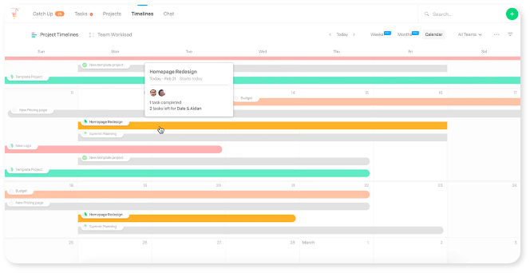

Work efficiently.
Planning thoroughly.
Muschel is designed for students who must to
handle massice things with limited time. You can
make
note, do planning andmore…
Just noting, planning and reading simply and beautifully.
Do notes with Markdown.
Study notes, work records, brain-stroming and so on…
- Cobalt
- Dracul
- Azure
- Ocean
- Amy
-
 Microsoft
Microsoft
Microsoft Corporation is an American multinational technology company with headquarters in Redmond, Washington.
-
 Google
Google
Google is an American multinational technology company that specializes in Internet-related services and products,
-
 Facebook
Facebook
Facebook is an American online social media and social networking service company based in Menlo Park, California. Its website was launched on February 4, 2004.
Making notes.
Let Muschel help you.
Muschel is designed to support Makedown.
You can insert any image or voice into a Muschel note.
Muschel pushes review notifications intelligently.
How to use Muschle for notes?
Manual

Use todos and time-line for
Individual events.
Team works.
Quickly add todos to individual events and team
works to keep yourself on taskly.
Time-line is a simply and beautiful tool
for your time management.
How to use Muschle for todos and time-line?
Manual
-

Instagram
-
Facebook
-

Twitter
-
Wechat
-

Weibo
Help to improve Muschel on Github